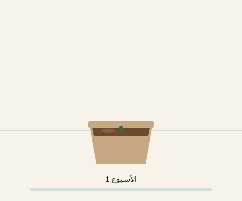

اختر المكان
ابحث عن بقعةٍ تأخذ شمس الصباح وتُظلَّل بعد الظهر. والصباحُ يكفي النبتة، وشمسُ الظهيرة في العين تحرق الورق.
إن كان سطحك مكشوفاً تماماً، فشبكةُ تظليلٍ بنسبة 50٪ تحلّ المشكلة — ثمنها أقلّ من 50 درهماً.
لا تحتاج سطحاً كبيراً ولا خبرة. حوضٌ واحدٌ بمترٍ مربّع يكفي ليعطيك خضاراً ثلاثة أشهر.
هكذا تنمو شتلةُ الطماطم خلال تسعة أسابيع على سطحٍ في العين. الصورة مأخوذةٌ من تجربة أحد المتطوّعين، بلقطةٍ كلّ أسبوع.
وتحت الصورة المرحلة واسمها: من البذرة، إلى الإنبات، إلى الورق الحقيقي، إلى التفرّع، إلى الإزهار، إلى الحصاد. فتعرف ماذا تتوقّع في كلّ أسبوع — ومتى تقلق ومتى تصبر.
الصيغة: GIF — حركةٌ قصيرة متكرّرة بلا صوت، لا تحتاج تحكّماً.

ابحث عن بقعةٍ تأخذ شمس الصباح وتُظلَّل بعد الظهر. والصباحُ يكفي النبتة، وشمسُ الظهيرة في العين تحرق الورق.
إن كان سطحك مكشوفاً تماماً، فشبكةُ تظليلٍ بنسبة 50٪ تحلّ المشكلة — ثمنها أقلّ من 50 درهماً.
عمقٌ لا يقلّ عن 30 سنتمتراً، وثقوبُ تصريفٍ في القاع. واخلط التربة هكذا:
أكثرُ سببٍ لموت النبتة الأولى أنّها زُرعت في غير موسمها. فانظر في روزنامة الزراعة ماذا يُزرع هذا الشهر، وابدأ بما وُصف بـ«سهل».
مرّةً في الصباح الباكر شتاءً، ومرّتين صيفاً. والقاعدة: أدخل إصبعك سنتمترين في التربة — إن خرج جافّاً فاسقِ، وإن خرج رطباً فانتظر.
والريُّ الزائد يقتل أكثر ممّا يقتل العطش.